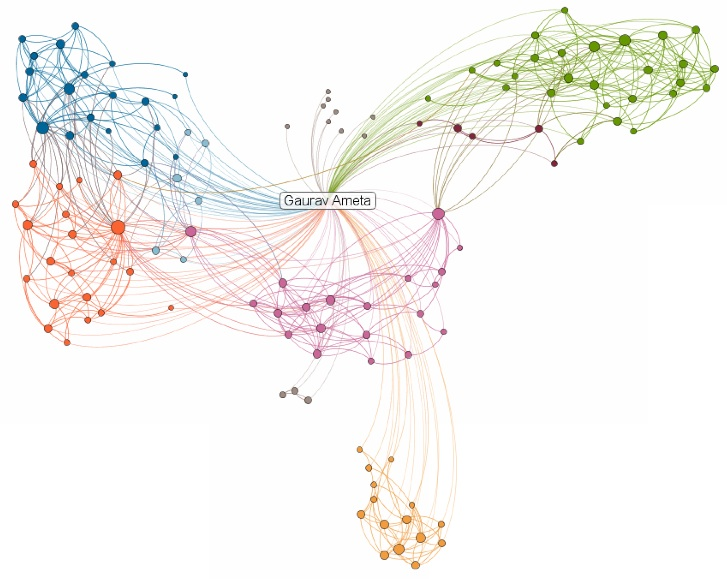
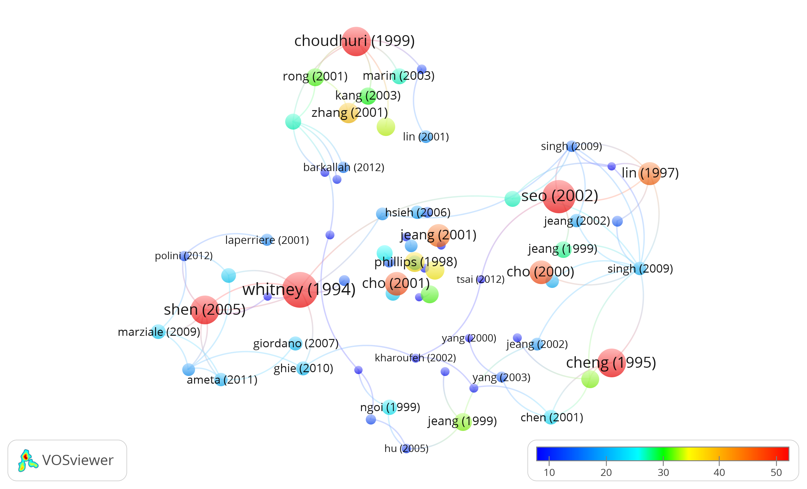
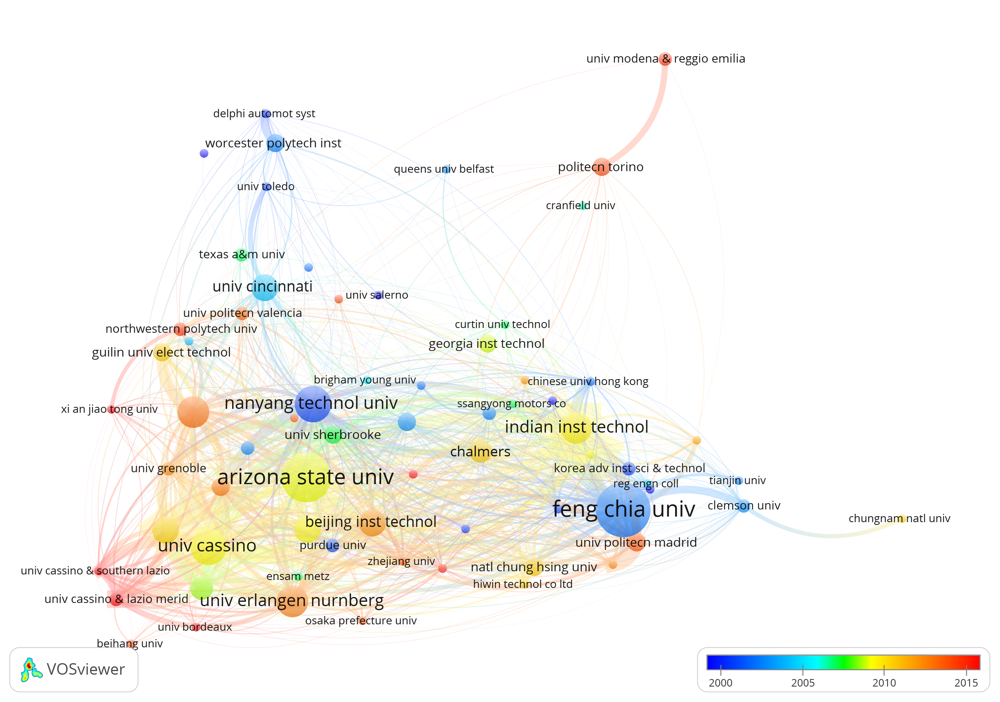

Gaurav Ameta
Education:
- Ph.D. in Mechanical Engineering, Arizona State University, Tempe, AZ, USA, December 2006
- M.S. in Mechanical Engineering, Arizona State University, Tempe, AZ, USA, May 2004
- B.E. in Mechanical Engineering, Bhilai Institute of Technology, Durg, CG, India, June 2001
Work Experience:
- Guest Researcher, National Institute of Standards and Technology, Gaithersburg, MD, USA May 2016-contd.
- Associate Professor, Indian Institute of Technology-Jodhpur, Rajasthan, India, July 2015 - May 2016.
- Adjunct Professor, Washington State University, Pullman, WA, USA, August 2015 - June 2016.
- Assistant Professor, Washington State University, Pullman, WA, USA, Aug 2008 - June 2015.
- Adjunct Professor, Grenoble-INP, Grenoble, France, May 2014 - June 2016.
- Guest Researcher, National Institute of Standards and Technology, Gaithersburg, MD, USA Oct 2007-Aug 2008.
- Post Doctoral Research Associate, Arizona State University, May 2007-Oct 2007
- Technical Research Associate, Arizona State University, Feb 2007-May 2007
- Faculty Assistant, Arizona State University, Dec 2006-Jan 2007
Research Interests:
- Additive Manufacturing
- Computer-aided design and manufacturing
- GD&T, tolerance analysis and allocation
- Geometric problems in design, manufacturing and inspection
- Product models, informatics and data analytics
- Sustainable design and manufacturing
- Uncertainty quantification and machine learning
National & International Recognition:
- Outstanding Associate Award-2017, Engineering Laboratory, NIST.
- Member of Standards Committee Product Definitions for Additive Manufacturing (ASME Y14.46) since Dec 2014.
- Contributing Member of Verification and Validation for Advanced Manufacturing (ASME V&V50) since Dec 2016.
- Chair of the Computer Aided Product and Process Design Committee in the Computers and Information in Engineering Division (CIE) of ASME (2013-2014).
- Member of the International Scientific Committee for the CIRP Computer Aided Tolerancing Conference (2011-2018).
- Young Engineer 2011 Award from ASME's Computers and Information in Engineering Division at the 31st Computers and Information in Engineering Conference (IDETC) in Washington, DC, USA, Aug 28-31, 2011
- Best Paper Award for the paper titled Worst-Case Tolerance Analysis of a Self-Aligning Coupling Assembly using Tolerance-Maps in the 11th CIRP Int'l Seminar on CAT, March 22-23, 2009, Annecy, France.
- CIE Poster Award for the poster 'Srinivasan R., Hu Yang and Ameta G., "Poster:Estimating Selective Disassembly Time using Disassembly Graph based on Connective Complexity Metrics", International Design Engineering Technical Conference-2012/ Computers and Information in Engineering, Chicago, IL, USA, Aug 11 - 14, 2012.'
- News Articles
Additive Manufacturing
- Additively Manufactured Lattice Inspection Challenges
- Data Analytics: Bayesian Networks in Predicting Part Performance for Laser-Powder Bed Fusion Process
- Laser-Powder Bed Fusion: Scan Path Optimization
- Uncertainty and Ontology for Design Rules in Additive Manufacturing
- Tolerancing Challenges with Additive Manufacturing (Lead and procured external funding $116,000)
- Tolerance Evaluation for Additive Manufacturing (Lead and advised two students, funding $20,000)
Sustainability
- Indo-US Joint Center on Design of Sustainable Products, Services and Manufacturing Systems (Partnered with 5 other faculties internationally, external funding $162,000)
- Novel Geometric Metric for Sustainability (Lead and advised 3 students, funding $20,000)
- Framework to support Sustainable Design (Lead and advised 1 PhD student, funding $20,000)
- Sustainable Selective Disassembly Planning (Lead and advised 2 students)
- Carbon Weight Analysis for Sustainable Product Design (External funding $60,000)
Composites PLM
- State of the art and current industry practices for modeling and exchange of composites information in PLM (Procured external funding $31,000)
Tolerance Analysis
- Geometric Tolerance Characterization from Machining Parameters
- Mathematical Modeling of Tolerances
- Statistical Tolerance Analysis
DfM/Feature Recognition
- Geometric Selection for Interactive Feature Parameter Definition
- Case Study for DFM and Feature Recognition testbed at ASU
Publications:
2018
Journal
Conference Papers
2017
Journal
Conference Papers
2016
Journal
Conference Papers
2015
Journal
Book Chapters
Conference Papers
2014
Thesis
Journal
Posters
2013
Thesis
Journal
Book Chapters
Conference Papers
Poster
2012
Thesis
Conference Papers
Posters
2011
Journal Papers
Thesis
Conference papers
2010
Journal Papers
Book Chapters
Conference papers
Posters
Reports
Mani M., Johansson B. J., Lyons K. W., Sriram R. D., Ameta G., "Modeling, Simulation and Analysis for Sustainable Product Development", NISTIR 7745, Nov 2010, link
2009
Journal Papers
Conference Papers
Reports
Ameta G., Mani M., Rachuri S., Lyons K. W., Shaw F., Sriram R. D., "Carbon Weight Analysis for Machining Operation and Allocation for Redesign", NISTIR 7560, Dec 2009, link
2008
Book Chapters
Conference Papers
Reports
Ameta G., Rachuri S., Fiorentini X., Mani M., Fenves S. J., Lyons K. W., Sriram R. D., "Extending the Notion of Quality from Physical Metrology to Information and Sustainability", NISTIR 7515, July 2008, link
2007
Journal Papers
Book Chapters
Conference Papers
2006
Thesis
Conference Papers
Posters
2005
Journal Papers
Conference Papers
Posters
2004
Thesis
Conference Papers
Posters
Courses Taught:
- Grenoble Institute of Technology (INP), France
- *Sustainability Assessment in Engineering Design, Summer 2014 and 2015
Graduate
- Indian Institute of Technology, India
- *ME 672 - Geometric Modelling and CAD, Spring 2016 Undergraduate
- ME 111 - Systems Exploration (Drawing), Fall 2015
- ME 324 - Industrial Engineering, Spring 2016
Graduate
- Washington State University, USA
- *ME 502 - Sustainability Assessment for Engineering Design, Fall 2012
- ME 574 - Foundations of CAD, Spring 2012
- *ME 579 - Special topics, Life Cycle Assessment, Fall 2010 Undergraduate
- ME 316 - Systems Design, [Fall 2008, 2011, 2012, 2013 and Spring 2009, 2012, 2013, 2014].
- ME 310 - Manufacturing Processes, [Fall 2009, 2010, Spring 2010, 2011, 2014 and Summer 2010, 2011]
- ME 473 - Advanced CAD and Geometric Modeling, [Spring 2010 and 2013]
- ME 212 - Dynamics, [Summer 2013]
Graduate
- Arizona State University, USA
- MAE 216 - Computer Aided Design, [Winter -2006-2007]
Undergraduate
Graduate Students Advised as Committee Chair
- He Huang, Ph.D, Graduated Spring 2012 Dissertation Title "A CAD-Based Framework for Energy Efficient Product Life-Cycle".
- Amaninder Gill, M.S., Graduation Spring 2014 Thesis Title "Hybrid uncertainty quantification methodology in Product Life-Cycle Assessment"
- Arvind Shankar, M.S., Graduated Fall 2013 Thesis Title "Statistical uncertainty accumulation in Product Life-Cycle Assessment"
- Yang Hu, M.S., Graduated Summer 2013 Thesis Title "Investigation of Sustainable Selective Disassembly Planning and Product Architecture Redesign Methodology"
- Raghunathan Srinivasan, M.S, Graduated Fall 2011 Thesis Title "Sustainability Analysis And Connective Complexity Method For Selective Disassembly Time Prediction"
- Martin Baker, M.S. (Non-Thesis), Graduated Spring 2013 Project Title, "Towards Non-Rocket Space Launch Systems: Emergent Structure and Properties of a Lighter-than-Air Distributed System"
- Mohammed Anazi, M.S. (Non-Thesis), Graduated Spring 2012 Project Title "Effects of Arm Position in a Stereolithography Machine on Geometric Quality of Manufactured Surface"
Graduate Students Advised as Committee Member
- Annie Chawla, MS Thesis 2014, "Compressor Assisted Air -Cooled Single Effect Absorption Chiller".
- Ryan Faulkner, MS Project 2013, "Development of Single Screw Extruder Based Fused Deposition Modeling Machine"
- Bryant Hawthorne, MS Thesis 2012, "Towards Feed-In-Tariff Policy Design Considering Multiple Objectives and Incomplete Preferences"
- Sindhuja Jujhavarapu, MS Project 2012, "Interoperability Issues in CAD Systems"
- Mayur Tailor, MS Thesis 2011, "Influence Of Surface Roughness On SS410, Cu And AZ31b, And Laser Processed SiC Coating On SS410 Towards Physical And Thermal Properties"
- Trung Chi Nguyen, MS Project 2011, "Case-studies in use of DFM Pro with Solidworks and Pro-E"
- Yiwen Liu, MS Thesis 2011, "Evaluating the Technical, Economic, And Environmental Impact Of The Level Of Decentralization In Energy Investment Decisions"
Undergraduate Research Advised
- Juan Diaz, Summer 2014, "Weighted Graph based metrics for Assembly Time Estimation in Preliminary Design".
- Jessica Spoll, Summer 2013, "Validating Complete Disassembly and Selective Disassembly Time Estimation".
- Abdon Godinez, Summer 2012, "Characterizing flatness of surfaces in a V-Flash machine based on the location and orientation of the surfaces".
- Noah Granieri, Summer 2010, "Towards a Multidimensional Geometric Metric for Sustainability".
Invited/Guest Presentations
- American Society of Mechanical Engineers - Webinar
- Co-presented Webinar: Overview of Y14.46 - Product Definition for Additive Manufacturing - Jan 2018
- Tampere University of Technology, Tampere, Finland
- Tampere Special Lecture: Tolerancing Specification Issues with Additive Manufacturing - Oct 2017
- National Institute of Standards and Technology, Gaithersburg, MD
- Engineering Lab Seminar: Tolerancing Issues with Additive Manufacturing - Dec 2014
- Engineering Lab Seminar: Tolerance Analysis - July 2012
- Seminar: Composite Modeling and Standards Landscape - Aug 2012
- MSID Seminar: Tolerance Modeling with T-Maps - Feb 2008
- University of Nebraska, Lincoln, NE
- Graduate Seminar: Recent Advaces in Sustainable Design - March 2012
- Washington State University, Pullman, WA
- Carbon Weight Tolerancing Methodology - Nov 2008
- Sustainable design in Mechanical Engineering - March 2009
- Arizona State University, Tempe, AZ
- Statistical Tolerance Analysis - Fall 2006
Professional Service
National and International Standards Organizations- Committee member
- ASME - Y14.46 Product definition for additive manufacturing - since 2016; contributing member since 2014
- ASME - Y14.48 Universal Direction and Load Indicators
- ASME - V&V50 Verification and Validation of computational modeling for advanced manufacturing - since 2017; contributing member since 2016
- Contributing member, ISO/ASTM F42 contributing member since 2016
- Chairman, Industry Immersion Program - 2015 to 2016
- Volunteer, Outcome based technical education, 2015-2016
- Chair Doctoral Admission Committee, Dec 2016
- Member, Graduate studies committee, School of Mechanical and Materials Engineering - 2009 to 2014.
- Member Safety Committee, School of Mechanical and Materials Engineering - 2009 to 2011.
- Major Advisor, Undergraduate Student Advising (30-50 students per semester) - 2009 to 2014
- NSF REU Faculty Mentor to summer (NSF site) REU students - 2010, 2012, 2013, 2014
- Judge,
- Spirit of Innovation Awards, Conrad Foundation, 2011.
- Imagine Tomorrow Competition 2009 and 2010.
- Wiley Research Symposium - Washington State University, 2008 and 2009.
- Product Design Advisor for
- Design and prototype of a 3D printer/scanner - collaboration with ME 401 Mechatronics course, Washington State University.
- Design and prototype of a 3-D printed quadrotor that can land on water - collaboration with ME 401 Mechantronics course, Washington State University.
- Design of a Portable Drip Irrigation and Harvesting mechanism/system for potatoes - collaboration with Skagit County Extension, Washington State University.
- Design of a Wind Resistant High Tunnel Hoop Crop Production system - collaboration with Mount Vernon, North West Research and Extension Center, Washington State University.
- Sustainability analysis and design of Wood High Rise - collaboration with Institute of Sustainable Design, Washington State University.
- Designing a sustainable mobile kitchen for food packaging/processing - collaboration with Pierce County Research and Extension Center, Washington State University.
- Designing a Sustainable Green Roof system - collaboration with Puyallup Research and Extension Center, Washington State University
- Environmental Cleanup with Sustainable ROV - collaboration with 4H Youth Club, Skagit County Extension, Washington State University.
- Design of a Baja RC CAR Test Stand - collaboration with ASME RC Baja Club, School of Mechanical and Materials Engineering, WSU, Pullman, WA
- Design of UAV thrust testing stand - collaboration with HYPER Lab, School of Mechanical and Materials Engineering, WSU, Pullman, WA
- Design of UAV autopilot test stand - collaboration with HYPER Lab, School of Mechanical and Materials Engineering, WSU, Pullman, WA
- Design of a Tumor Morcellator for horses - collaboration with Equestrian Surgery Team, School of Veterinary Medicine, WSU, Pullman, WA
-
Software Design Advisor for
- Developing Kinect UI based CAD tool utilizing natural human gestures in collaboration with the School of Electrical Engineering and Computer Sciences (EECS) Capstone Design course at Washington State University.
- Assisted in the development of "What-if" Sustainability app for Facebook in collaboration with Pacific Northwest National Laboratory, USA and Capstone Design Team from the School of Electrical Engineering and Computer Science.
- School workshop organizer, Engineering 101 a Cougar Quest Summer 2012 Workshop to expose participating high school students to Microsoft's Kinect based CAD system developed at WSU.
- Student Mentor,
- Engineering and Applied Sciences Graduate Student Association, New Student Mentor Program, Fall 2004- Spring 2005.
- Fulton Undergraduate Research and Initiative, Spring 2005 and 2006.
- Judge, Senior Design Projects, Mechanical and Aerospace Engineering Department, Arizona State University Fall 2005.
- Student volunteer,
- At the 3rd Symposium on Research in Engineering and Applied Sciences 2005, Arizona State University.
- At the 9th CIRP International seminar on Computer Aided Tolerancing (CAT), April 11-12, 2005, Tempe, AZ.
- At the 2005 National Science Foundation (NSF) - Design, Manufacturing and Industrial Innovation (DMII) Grantees Workshop, January 3-6, 2005, Scottsdale, AZ.
- At the National Science Foundation (NSF) - Engineering Design Retreat/Strategic Planning Workshop (ED-2030), March 26-29, 2004, Phoenix, AZ.
- At the Army Research Office Workshop on Legacy Systems Engineering and Virtual Parts Engineering Research Center Review, June 5-6, 2003, Tempe, AZ.
- Past - Chair of CAPPD (Computer Aided Product and Process Development) committee - Computers and Information in Engineering subdivision of ASME, 2014-2015.
- Chair of CAPPD (Computer Aided Product and Process Development) committee - Computers and Information in Engineering subdivision of ASME, 2013-2014.
- Co-Chair of CAPPD (Computer Aided Product and Process Development) committee - Computers and Information in Engineering subdivision of ASME, 2012-2013.
- Secretary of CAPPD (Computer Aided Product and Process Development) committee - Computers and Information in Engineering subdivision of ASME, 2011-2012.
- Poster Session Organizer for Computers and Information in Engineering Conference, ASME IDETC-2012 in Chicago, IL, USA.
- Symposium Organizer, Tools and Metrics for Sustainable Manufacturing, in Computers and Information in Engineering Conference at ASME IDETC-2013 in Portland, OR, USA; ASME IDETC-2012 in Chicago, IL, USA; ASME IDETC-2011 in Washington DC, USA; ASME IDETC-2010 in Montreal, Quebec, CA; ASME IDETC-2009 in San Diego, USA.
- Review Coordinator, Computer Aided Product Development section in Computers and Information in Engineering Conference at ASME IDETC-2017 in Cleveland, OH; at ASME IDETC-2016 in Charlotte, NC; in ASME IDETC-2015 in Boston, MA; ASME IDETC-2014 in Buffalo, NY; ASME IDETC-2013 in Portland, OR; ASME IDETC-2011 in Washington DC, USA; ASME IDETC-2010 in Montreal, CA; ASME IDETC-2009 in San Diego, USA; ASME IDETC-2008 in New York, USA.
- Session Chair, Computers in Information and Engineering sub-section of Computer Aided Product Development section in Computers and Information in Engineering Conference at ASME IDETC/CIE conferences in 2010, 2011, 2012 and 2013.
- Session Chair, Design Automation and Applications sub-section of Computer Aided Product Development section in Computers and Information in Engineering Conference at ASME IDETC/CIE-2008 in New York, USA.
- Reviewed 100+ scientific papers for leading journals in Design, CAD, Manufacturing, Sustainability, etc.
- Reviewed 200+ scientific papers for leading conferences in Design, Tolerancing, Manufacturing and Engineering.
- Reviewed several grant proposals for leading US and Canadian funding agencies
My Linkedin Network

Citation Co-author Network
(All from Google Scholar, Python and D3 visualization library)
Paper Citation Network
Red circles are Gaurav's paper, blue are paper citing Gaurav's paper; Size of circle represents citation numbers; Only papers with a minimum citation limit are showing their first author and year
Arranged according to publication year
Tolerance Research Network

